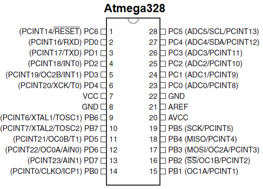
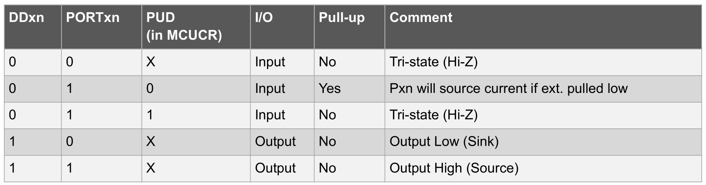
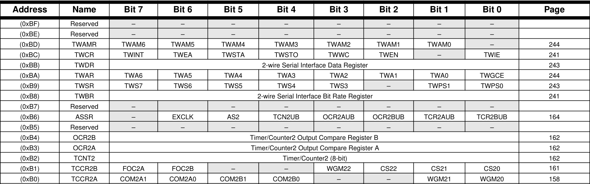
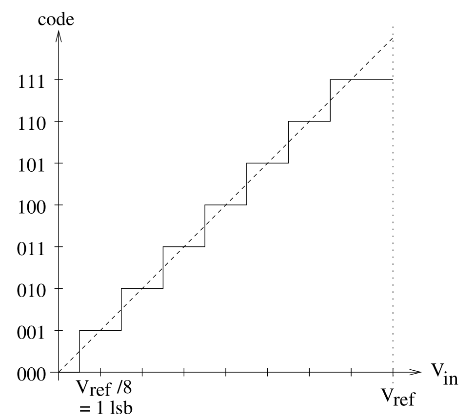
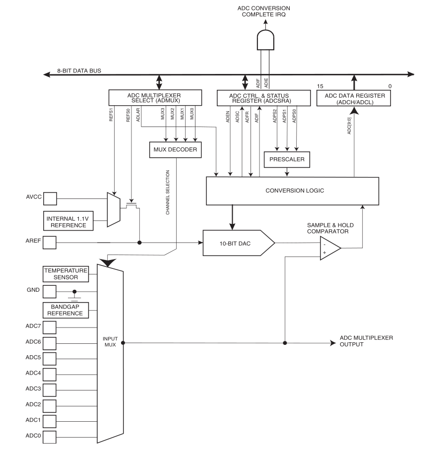

Tri State Logica
| A | B | C |
| 0 | 1 | 0 |
| 1 | 1 | 1 |
| X | 0 | Z |
Tri State Logica
- pinMode = INPUT
- Pin is dan hoog impedant
- Pin kan dan zweven(Waardes zijn random)
- Reden
- Ruis op het systeem
- Capacitieve koppeling
- Oplossing
- Extern
- Intern
Extern
- Pull Up:
- constant HIGH signaal
- constant stroom verbruik
- Pull Down:
- constant LOW signaal
- geen stroom verbruik
- Keuze afhankelijk van je input
- Voor een simpele push button kan beide
Pull Up Resistor
Pull Down Resistor

Poorten
- Verzameling GPIOs
- Fysiek
- Configuratie
- Beïnvloed door meerdere registers
- DDRx
- PORTx
- PINx
- Read/Modify/Write
Poorten


Registers
- PORTx
- DDRx
- PINx
- MCUCR
Port Register B/C/D (PORTx)
- Instellen van logische level
- Instellen van interne pull up weerdstand
- if (DDXy = 0 & PORTxy) then PullUp = 1
- Voor elke poort een Data register
-
PORTC |= (1 << PORTC7) PORTC &= ~(1 << PORTC5)
Data Direction Register B/C/D (DDRx)
- Input of Output
- Input = 0
- Output = 1
- Voor elke poort een richting register
-
DDRB |= (1 << DDB7) DDRB &= ~(1 << DDB5)
Pinmode
- Arduino Pin != IO Pin
- Mapping
- Configuratie door zetten bits
void pinMode(uint8_t pin, uint8_t mode)
{
uint8_t bit = digitalPinToBitMask(pin);
uint8_t port = digitalPinToPort(pin);
volatile uint8_t *reg, *out;
if (port == NOT_A_PIN) return;
// JWS: can I let the optimizer do this?
reg = portModeRegister(port);
out = portOutputRegister(port);
if (mode == INPUT) {
uint8_t oldSREG = SREG;
cli();
*reg &= ~bit;
*out &= ~bit;
SREG = oldSREG;
}
else if (mode == INPUT_PULLUP) {
uint8_t oldSREG = SREG;
cli();
*reg &= ~bit;
*out |= bit;
SREG = oldSREG;
}
else {
uint8_t oldSREG = SREG;
cli();
*reg |= bit;
SREG = oldSREG;
}
}
Pin Input Register B/C/D (PINx)
- Read Only Register
- Pin State
- Schrijven heeft geen effect
- Voor elke poort een pin state register
-
byte state = (PIND >> PIND3) & 0x1 byte x = (PINC >> PIND7) & 0x1
Microcontroller Control Register (MCUCR)
- Instellen van algemene enable interne pull up weerstanden
- PUD = 0 -- Enabled
- PUD = 1 -- Disabled
- Staat standaard aan
Samengevat
Waar vind je deze informatie
- ATmega328p Datasheet
- Hoofdstuk 18 - I/O Ports
Registers
- Geheugen locatie
- Gekoppeld aan een functionaliteit
- 8 Bytes = 255 mogelijkheden
Registers
IO Definition File
avr/io.h
#ifndef _AVR_IO_H_
#define _AVR_IO_H_
#include
#if defined (__AVR_AT94K__)
# include
#elif defined (__AVR_AT43USB320__)
# include
#elif defined (__AVR_AT43USB355__)
# include
#elif defined (__AVR_AT76C711__)
# include
#elif defined (__AVR_AT90PWM3__)
# include
#elif defined (__AVR_AT90PWM3B__)
# include
#elif defined (__AVR_AT90PWM216__)
# include
#elif defined (__AVR_AT90PWM316__)
# include
#elif defined (__AVR_AT90PWM161__)
# include
#elif defined (__AVR_AT90PWM81__)
# include
#elif defined (__AVR_ATmega8U2__)
# include
*****
avr/iom328p.h
#define PINB _SFR_IO8(0x03)
#define PINB0 0
#define PINB1 1
#define PINB2 2
#define PINB3 3
#define PINB4 4
#define PINB5 5
#define PINB6 6
#define PINB7 7
#define DDRB _SFR_IO8(0x04)
#define DDB0 0
#define DDB1 1
#define DDB2 2
#define DDB3 3
#define DDB4 4
#define DDB5 5
#define DDB6 6
#define DDB7 7
#define PORTB _SFR_IO8(0x05)
#define PORTB0 0
#define PORTB1 1
#define PORTB2 2
#define PORTB3 3
#define PORTB4 4
#define PORTB5 5
#define PORTB6 6
#define PORTB7 7
Wat we eigenlijk schrijven
PORTC |= (1 << PORTC7)
PORTC &= (1 << PORTC5)
0x28 |= (1 << PORTC7)
0x28 &= (1 << PORTC5)
- SFR Heeft een vaste locatie
- Geen automatisch geheugen alloctie nodig
- Rechstreeks aanspreken is veilig
Oefening #1
- Maak volgende opstelling
- Kloon het interrupt Example
- Geef de waardes van de registers na elke loop
void setup(){
DDRD |= 1 << DDRD6;
}
void loop(){
_delay_ms(500);
PORTD ^= 1 << PORTD6;
}
Oefening #2
- Vanuit de interrupt oefening:
- Laat een led branden via pin 4 van de Arduino
Oefening #3
- Vanuit de interrupt oefening
- Lees de input van de pushbutton
- Laat de led branden afhankelijk van de waarde op de button
Oefening #4
- Laad in PORTD volgende waardes in:
- 0x55
- 0xAA
- Toon de werking aan met ledjes
Analoge Digitale Conversie (ADC)
Eigenschappen ADC
- Resolutie
- `2^(#Bits ADC)`
- `1024`
- Range
- `0 - 2^(#Bits ADC -1)`
- `0 - 1023`
- Accuracy
- `V_(ref) / (Resolutie)`
- `(5V) / 1024 ≈ 4,9mV`
- `analogRead = (V_(IN) * Resolutie)/V_(ref)`

Analoge Digitale Conversie (ADC)

Configuratie door zetten van register waarde ...
- Multiplexer
- Referentie voltage
- Prescaler
- Status Register
- ....
ADC Multiplexer Selection Register
- Referentie Voltage Selecteren
- ADC Pin Selectie
- Left Adjust
- Zie datasheet
ADC Referentie Voltage
- AVCC Instellen
-
ADMUX |= (1 << REFS0);
ADC Pin Selecteren
- Je kan maar een pin tegelijk uitlezen
- ADCX (ATmega328p Pin) = AX(Arduino Pin)
-
ADMUX |= (~(1 << MUX1) | ~(1 << MUX0));
ADC Status Register A
| ADEN | ADC Enable |
| ADSC | ADC Start Conversion |
| ADATE | ADC Auto Trigger Enable |
| ADIF | ADC Interrupt Flag |
| ADIE | ADC Interrupt Enable |
| ADPS2-0 | ADC Prescaler bit |
ADC Prescaler Instellen
- Frequentie tussen 50kHz en 200kHz
- Arduino draait op 16 MHz
- Prescaler is dus altijd 128
- `(16MHz) / 128 = 125kHz`
-
ADCSRA |= (1 << ADPS2) | (1 << ADPS1) | (1 << ADPS0);
Conversie Starten
Single Conversion
- Eerst instellingen doen
- Eenmalig triggeren van ADC
- Kan herhaalt worden door ADSC terug op een te zetten
- Makkelijk om van kanaal te wisselen
-
ADCSRA |= (1 << ADEN); ADCSRA |= (1 << ADSC);
Freerunning
- Eerst instellingen doen
- Continue conversie
- Disablen door ADEN op nul te zetten
- Moeilijk om van kanaal te wisselen
-
ADCSRA |= (1 << ADATE); ADCSRA |= (1 << ADEN); ADCSRA |= (1 << ADSC);
ADC Waarde uitlezen (ADCL/ADCH Registers)
- Afhankelijk van ADLAR
- ADCL eerst uitlezen dan ADCL
-
Serial.println(ADCL | (ADCH << 8));

Oefening #1
- Maak een opstelling waar je een pot uitleest op AO
- Upload en test de volgende code
void setup() {
Serial.begin(9600);
ADCSRA |= (1 << ADPS2) | (1 << ADPS1) | (1 << ADPS0);
ADMUX |= (1 << REFS0);
ADCSRA |= (1 << ADEN);
ADCSRA |= (1 << ADSC);
while ((ADCSRA & (1 << ADSC)));
Serial.println((ADCH << 8) | ADCL);
Serial.println("DONE");
}
void loop() {
Serial.println(ADCL | (ADCH << 8));
}